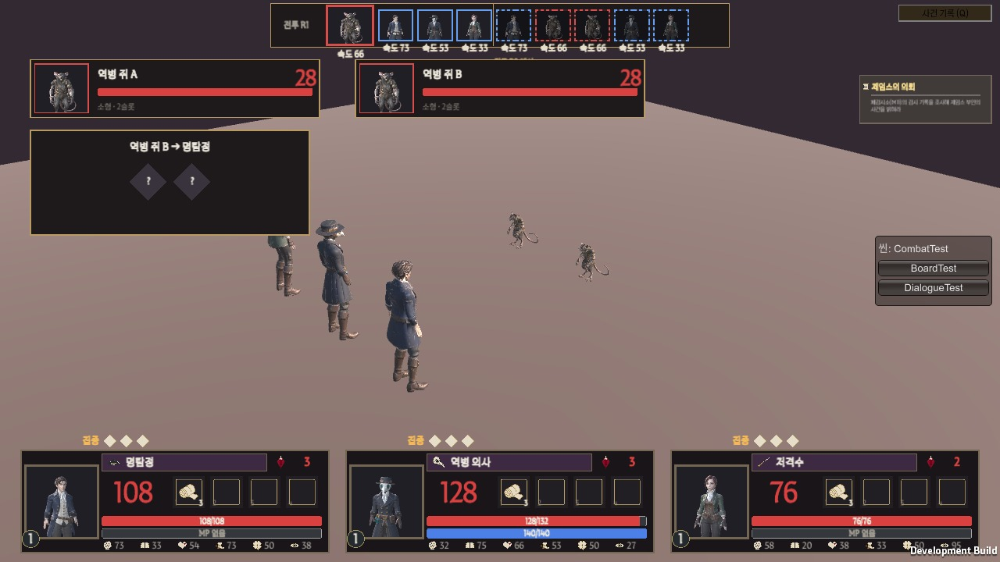
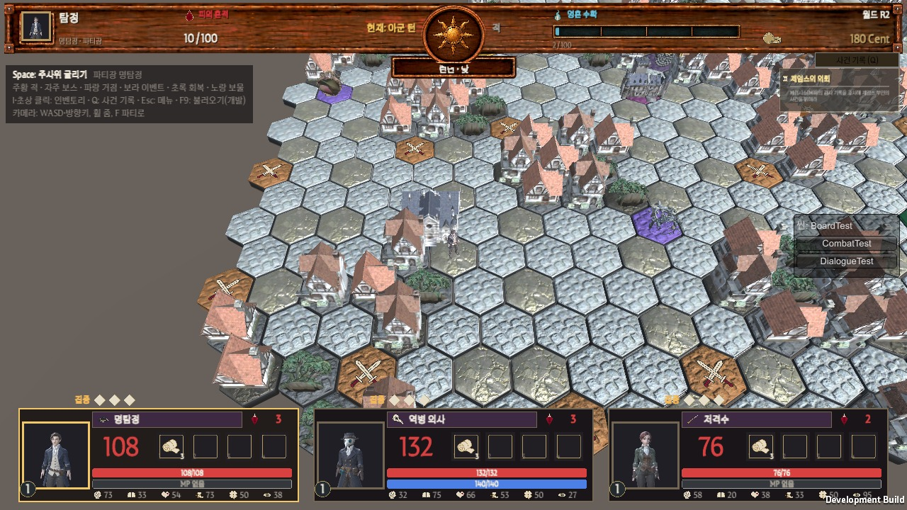

한 줄 요약: 판·전투 화면을 더 잘 보이게 하는 5가지와 기타 2가지를 정해 주세요.
기획서에 없는 연출이라 OK를 받은 것만 넣습니다. 각 항목에서 A/B/C 중 하나를 골라 주시면 됩니다. (추천 표시는 개발 의견) 11/8부터 새 기능을 넣지 않기로 했으므로, 1~4번은 11/7 안에 답을 주셔야 1막에 들어갑니다.
한눈에 보기
#
항목
지금 상태
작업 크기
1
발 밑 그림자
그림자가 없어 인물이 떠 보임 (전투·판 모두)
작음
2
판 앞줄 건물
카메라 쪽 건물이 칸·적 표시를 가림
작음
3
판 위 말 (파티장)
11/7 적용함 — 빨간 공 → 파티장 모델. 크기·걷는 동작·거점 칸 가려짐 결정 필요
작음
4
공격할 때 반 걸음
공격 동작은 제자리에서만 나옴
작음
5
디오라마 흐림 · 안 가 본 곳 흐리게
없음 — 1막 뒤로 미루는 것 제안
중간
기타
사신 낫 크기 · 회복 스킬 동작
낫이 잘 안 보임 · 회복 스킬은 동작 없음
작음
1. 발 밑 그림자

지금 전투 화면 (11/7 빌드)확대 — 발 밑에 그림자가 없어 바닥에서 떠 있는 것처럼 보임
11/6 보고서의 "아군이 조금 떠 보임"의 원인으로 보입니다. 옛 게임(마리오 64 등)은 발 밑에 동그란 어두운 그림 한 장만 깔아서 해결했습니다.
골라 주세요 ☐A. 동그란 그림자 (블롭) — 발 밑에 흐린 원 1장. 가볍고 바로 가능 ← 추천 ☐ B. 실시간 그림자 — 모양이 정확하지만 프레임이 떨어짐 (보드 105 FPS → 하락 예상) ☐ C. 지금대로 (그림자 없음) 적용 범위도 골라 주세요: ☐ 전투만 ☐ 판 위 말·사신 말도 같이
2. 판 앞줄 건물
판 왼쪽 아래 (확대). 카메라 쪽 막힌 칸의 집이 뒤쪽 칸과 적 칸(칼 표시)을 가림
카메라가 비스듬히 내려다보기 때문에, 화면 아래쪽(카메라 쪽)에 있는 높은 집이 그 뒤의 칸을 가립니다. 갈 수 있는 칸·적 칸이 잘 안 보이면 이동을 고르기 어렵습니다.
골라 주세요 ☐A. 카메라 쪽 막힌 칸만 낮은 소품(나무·바위)으로 바꿈 — 막힌 칸이라는 뜻은 그대로 ← 추천 ☐ B. 말 근처 집을 반투명하게 — 계속 바뀌어 산만할 수 있음, 작업 더 큼 ☐ C. 지금대로
3. 판 위 말 = 파티장 모델 (11/7 적용)

지금 판 화면 — 가운데 거점 옆 작은 인물이 파티장(명탐정)확대 — 칸 위에 서서 가는 방향을 바라봄
요청 목록(AssetList 3-3 "파티장 캐릭터 미니어처")대로 빨간 공 → 파티장(1번) 모델로 바꿨습니다. 파티장이 쓰러져 다음 순번이 이어받으면 말도 그 인물로 바뀝니다. 아래 3가지를 정해 주세요.
3-1. 크기
☐ A. 지금 0.6배 (사신 말과 같은 크기) — 화면에서 작게 보임 ☐B. 0.8배 — 칸 안에서 눈에 잘 띔, 사신 말보다 조금 큼 ← 추천 ☐ C. 1.0배 — 집과 비슷한 크기, 옆 칸을 가릴 수 있음
3-2. 걷는 동작
받은 움직임에 걷기(Walk)가 없어서 서 있는 자세로 미끄러지듯 이동합니다.
☐A. 지금대로 (서서 이동) — 보드게임 말 느낌. 1막은 이대로 ← 추천 ☐ B. 칸마다 살짝 통통 뛰기 — 개발만으로 가능, 그림 필요 없음 ☐ C. 디자인에 걷기 움직임 추가 요청 → 받으면 연결
3-3. 시작 거점 칸에서 말이 가려짐
게임 시작 직후 — 말이 런던 거점 건물 안에 있어 보이지 않음 (빨간 공일 때도 같았음)
☐A. 거점 칸에서는 말을 건물 앞쪽(카메라 쪽) 가장자리에 세움← 추천 ☐ B. 거점 건물을 조금 작게 ☐ C. 지금대로 (한 칸 움직이면 보임)
4. 공격할 때 반 걸음
지금은 공격 동작이 제자리에서 나옵니다. 인물이 3명씩 줄 서 있어서 누가 공격 중인지 한눈에 안 보일 때가 있습니다.
☐A. 공격할 때 앞으로 반 걸음 나갔다가 돌아옴 (근접·원거리 모두) ← 추천 ☐ B. 공격하는 인물 발 밑만 밝게 표시 ☐ C. 지금대로
5. 디오라마 흐림 · 안 가 본 곳 흐리게
디오라마 흐림: 화면 위·아래 끝을 살짝 흐리게 해서 "작은 모형" 느낌 (For The King · 옥토패스 트래블러 방식).
안 가 본 곳 흐리게: 가 본 칸만 또렷하게 (문명 6 방식).
☐A. 1막 뒤로 미룸 — 11/8 이후 새 기능 금지, 성능 비용도 있음 ← 추천 ☐ B. 1막에 넣음 (11/7 안에 확정 필요) ☐ C. 하지 않음
기타 확인 2가지
항목
지금
골라 주세요
사신 낫 크기
사신 모델의 낫이 작아 판·전투에서 잘 안 보임
☐ A. 낫만 키워 달라고 디자인에 요청 ☐ B. 지금대로
회복 스킬 동작
동작 없음 (공격 동작을 쓰면 아군을 때리는 것처럼 보여서 뺌)
☐ A. 지금대로 (동작 없음)← 추천 ☐ B. 디자인에 회복 동작 추가 요청
답변 방법
항목 번호 + 고른 글자만 보내 주시면 됩니다. 예: "1A(전투·판 둘 다), 2A, 3-1 B, 3-2 A, 3-3 A, 4A, 5A, 낫 A, 회복 A"
고른 것은 Docs/Planning/Decisions.md에 기록하고 바로 넣겠습니다.
참고 자료: Docs/References/3D모델_배치_조사_2026-11-06.md (다른 3D 게임 조사, 출처 17개)